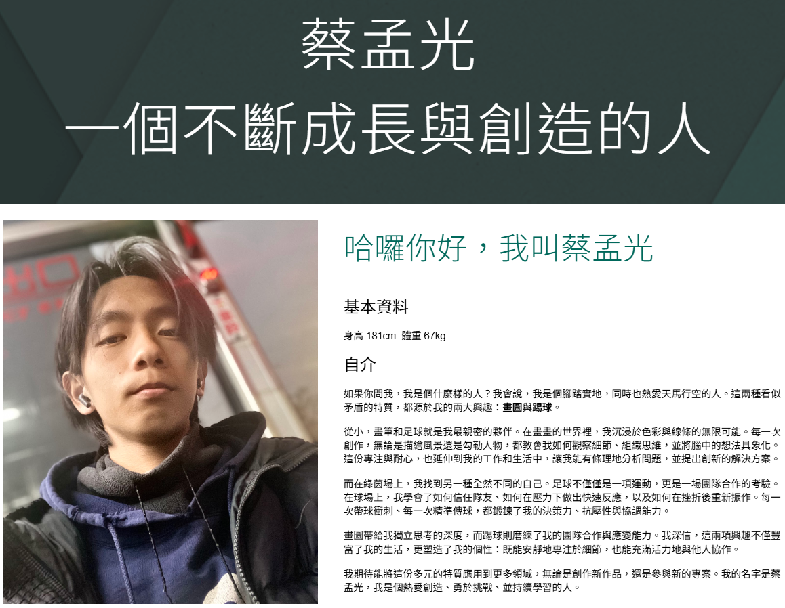
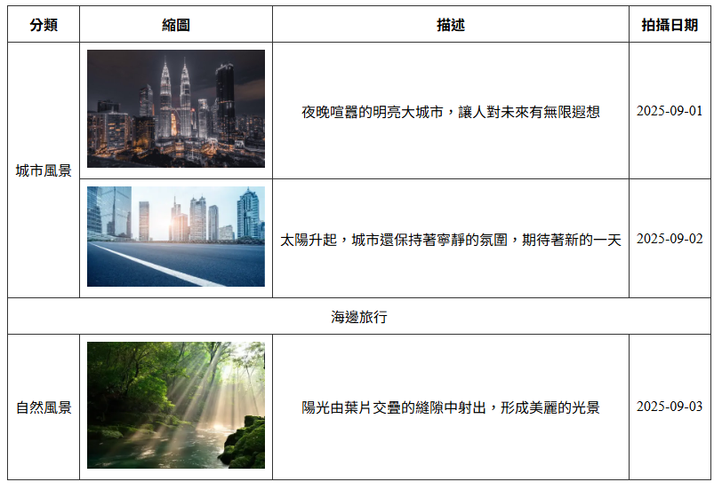
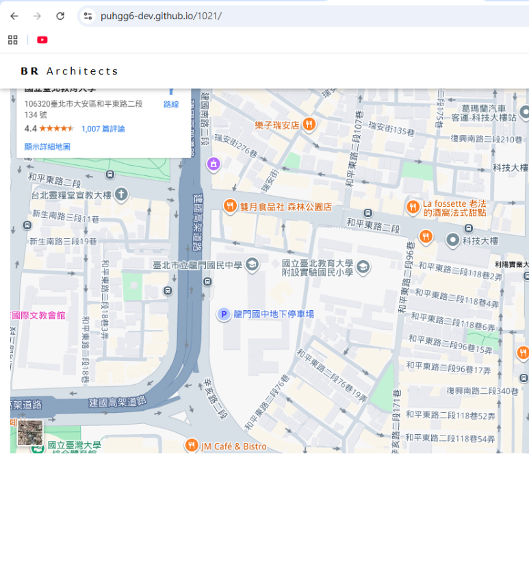
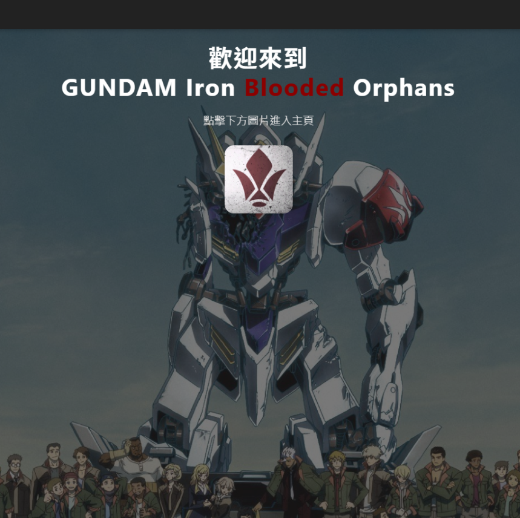
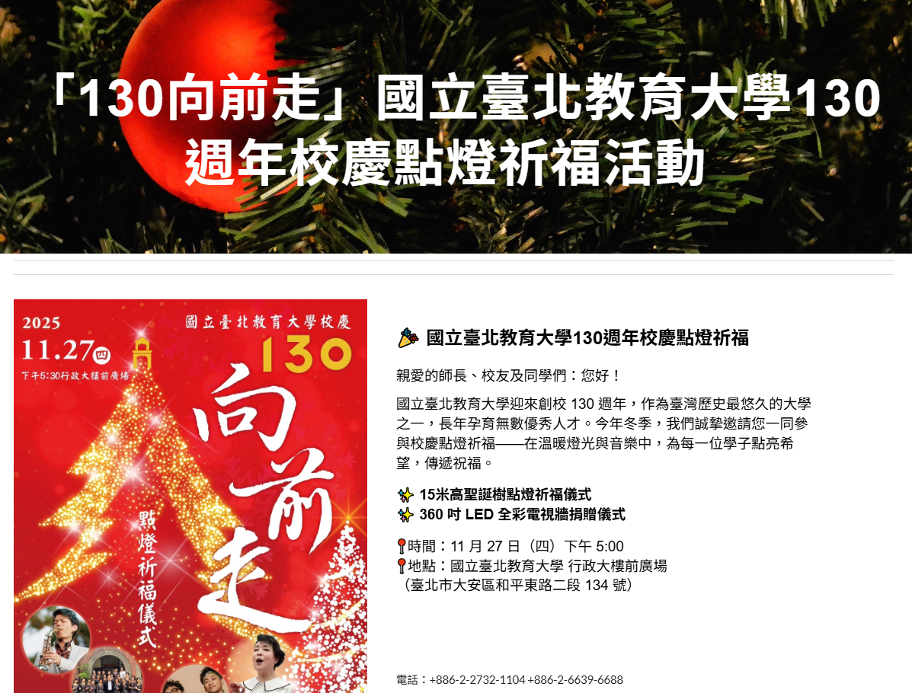

AI應用
因為是二階選課才成功選到了這一堂課，所以我初次上課有些緊張，還好是從比較基礎的地方:關於AI工具的應用。首先是製作由照片轉換的人物公仔模型，需要輸入老師給予的指令進而投射出想要製作的公仔，因為想試試功能性，回家後仍有進一步拿照片測試。而後在進行vscode的過程中，老師教我們能同時使用github copilot chat AI和Bootstrap等程式碼工具寫網站，對我之後的成果都有極大的幫助。
藝一乙 蔡孟光 111415002
姓名：蔡孟光 身高:181cm 體重:65kg
個性：活潑、有善待人
興趣：踢足球、聽音樂、看動漫、繪畫
學校與科系：國立臺北教育大學 藝術造型與設計學系設計組
因為是二階選課才成功選到了這一堂課，所以我初次上課有些緊張，還好是從比較基礎的地方:關於AI工具的應用。首先是製作由照片轉換的人物公仔模型，需要輸入老師給予的指令進而投射出想要製作的公仔，因為想試試功能性，回家後仍有進一步拿照片測試。而後在進行vscode的過程中，老師教我們能同時使用github copilot chat AI和Bootstrap等程式碼工具寫網站，對我之後的成果都有極大的幫助。
在工具的使用上，課程由使用協作頻台逐漸轉換成使用vscode。和淺顯易懂簡單操作的Google協作平台不同，vscode是這堂課我們真的需要更了解程式碼的開始，他帶入了內建AI協作的設計方式，同時學習由bootstrap和W3School所列出的程式碼，讓我們進一步熟悉製作網站，其中的自製網站以及期末的成果網站便是使用vscode功能並集合滿意作品製作而成的。

第一次上課，藉由較為操作簡單的Google協作平台，練習初步的網站製作
查看作品
參考老師的範例練習了表格不同的呈現方式，比如說格子的區分或合併去對應不同照片
查看作品依照課堂上老師的指導，製作了關於自我簡介的簡歷小卡，進一步了解使用vscode
查看作品
用標明地理位置的方式，讓使用者能知道國北教大位置的同時，更了解周邊的位置配置
查看作品
挑選三架具辨識度的系列作品鋼彈，用簡介讓人對這部作品登場的機體有更深的認識
查看作品
期末作業前的小組合作，是最後的複習，將學校晚會宣傳精緻化成美觀易懂的網站
查看作品作為選擇了藝術造型與設計學系的學生，因為堅信網站設計對我的出路一定會有不小的幫助，所以選擇了這一堂課，雖然有不安和焦慮，但對於身處於AI進步快速之時代的我們而言，網站設計變得不再同從前那麼的複雜，同時證明了AI的恐怖以及實用，希望以後能不被AI完全取代，盡量用自己的想法設計出抓人眼球的網站。